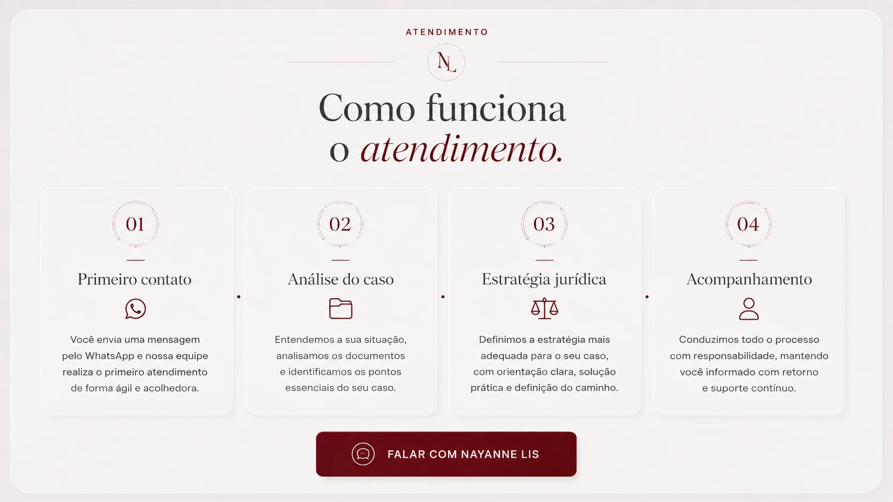
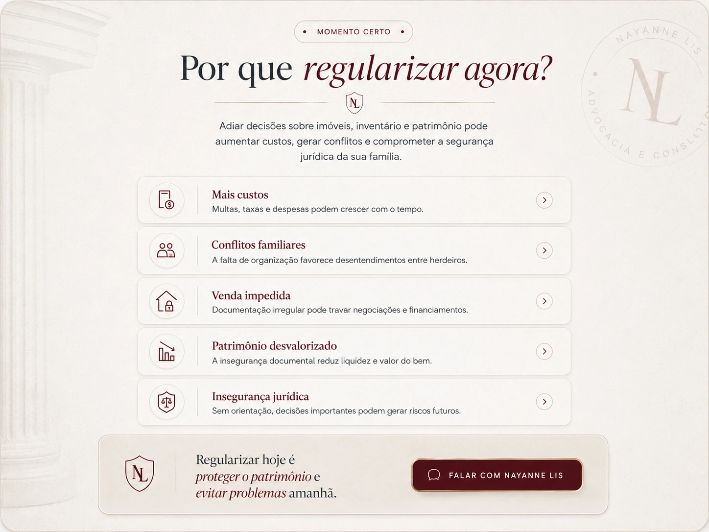
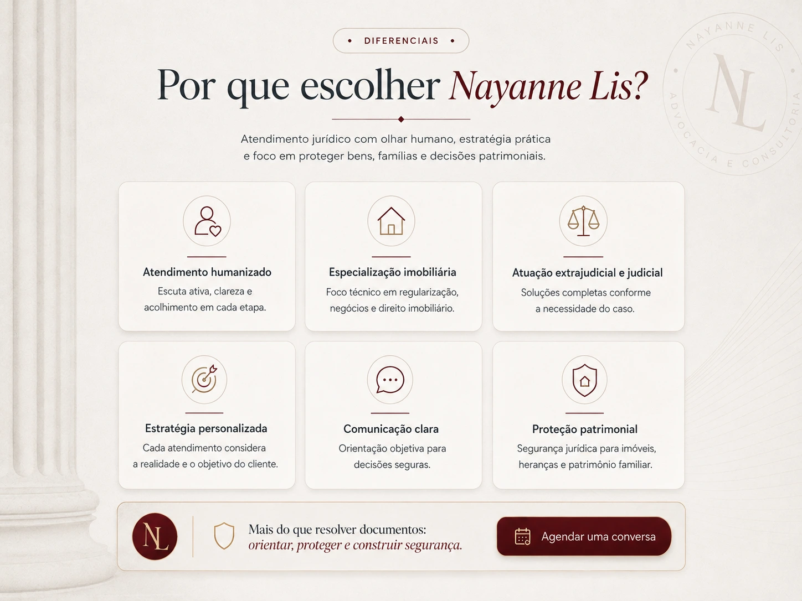
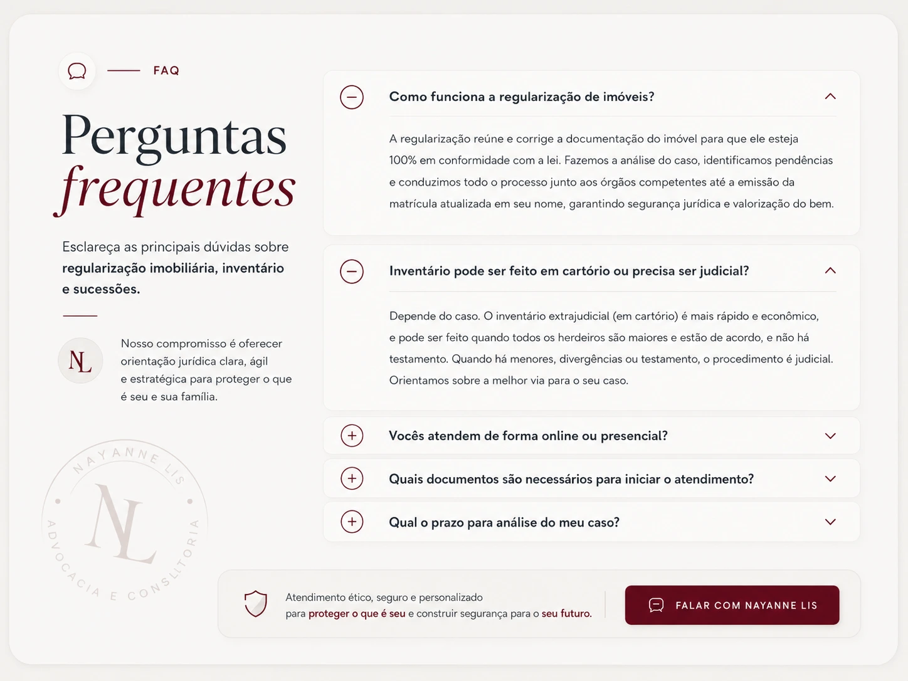
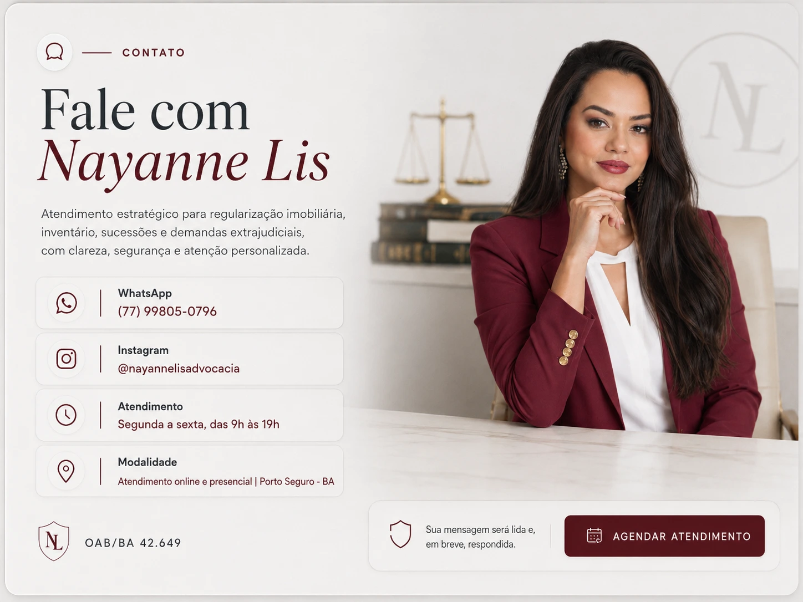

Nayanne Lis Advocacia e Consultoria
Regularização imobiliária e inventário com segurança jurídica
Soluções jurídicas completas para proteger você, sua família e seu patrimônio, com atendimento humanizado, estratégia patrimonial e atuação extrajudicial e judicial.
Situações comuns que precisam de orientação jurídica
Imóvel irregular, herança travada, compra sem segurança, usucapião e posse, doação e planejamento, medo de perder dinheiro ou direitos por falta de orientação.

Como funciona o atendimento
- Primeiro contato pelo WhatsApp.
- Análise do caso e documentação.
- Definição da estratégia jurídica.
- Acompanhamento com retorno e suporte continuo.
Áreas de atuação em bens e imóveis
Regularização de imóveis urbanos e rurais, inventários judiciais e extrajudiciais, doações e planejamento patrimonial, usucapião, direito e gestão condominial, questões condominiais, due diligence imobiliária, assessoria em leilões e análise documental.
Documentos que podem ser analisados
Escritura, matrícula do imóvel, contrato de compra e venda, certidões, documentos de inventário, comprovantes de posse, IPTU, ITR e documentos de doação.

Por que regularizar agora
Adiar decisões sobre imóveis, inventário e patrimônio pode aumentar custos, gerar conflitos familiares, impedir vendas, desvalorizar o patrimônio e criar insegurança jurídica.

Por que escolher Nayanne Lis
Atendimento humanizado, especialização imobiliária, atuação extrajudicial e judicial, estratégia personalizada, comunicação clara e proteção patrimonial.

Perguntas frequentes
A regularização reúne e corrige a documentação do imóvel. Inventário extrajudicial pode ser feito em cartório quando os herdeiros são maiores e estão de acordo. Atendimentos podem ser online ou presenciais.

Fale com Nayanne Lis
WhatsApp (77) 99805-0796. Instagram @nayannelisadvocacia. Atendimento de segunda a sexta, das 9h as 19h. Atendimento online e presencial em Porto Seguro-BA. OAB/BA 42.649.